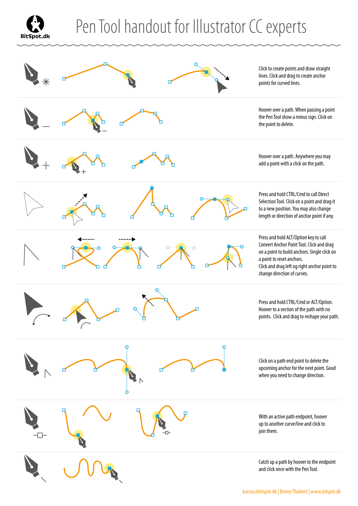

Photoshop er et billede behandlingsprogram udbudt af Adobe. Med Photoshop kan vi i store træk gø alt med billeder, såsom retouch billeder, manipuler med billeder, laver farvebilleder til sort/hvid, gøre billeder skarpere eller slørede og forbedre billedkvaliteten, osv.Photoshop har sidste mange år haft monopol på markedet for billede behandlingsprogrammer. Alle fotografer og designer arbejder med photoshop
will come
Pen Tool er det mest kraftfulde værktøj i Illustrator. Det giver dig mulighed for at definere dine egne ankerpunkter, samt justere kurven, der er knyttet til disse ankre, blot ved at manipulere to kontrolpunkter, der er knyttet til hver anker
Med andre ord, for at oprette en linje, definerer du først to ankerpunkter.
